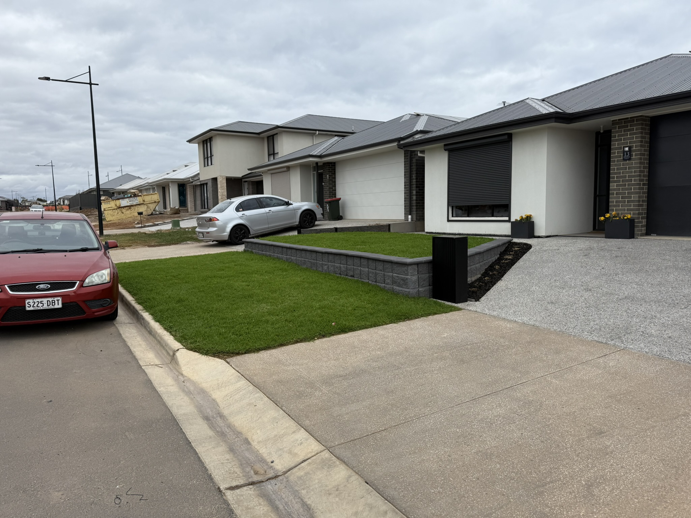

Coastal-savvy landscaping for Christies Beach properties — turf installation, irrigation, retaining walls, and garden builds designed to thrive near the sea.
Outdoor transformations across Christies Beach and Christie Downs — retaining walls, turf, irrigation, and planting by a local team that knows Adelaide's south.
Landscaping near the coast comes with its own set of considerations. Christies Beach properties often have sandy, free-draining soil that needs amendment before turf can establish properly. Salt-laden coastal winds affect which plants will thrive and which won't last the season.
At Maddern's Place, we understand coastal landscaping. We select turf varieties and plants that handle salt exposure well, prepare sandy soils with the right mix of loam and organics, and design irrigation systems that compensate for the faster drainage rates you get near the beach.
Whether you're landscaping a beachside block, renovating an established Christies Beach garden, or tackling a sloped property overlooking the coast, we deliver outdoor spaces that look great and stay healthy through Adelaide's hot, dry summers.
Our team services all of Christies Beach and the surrounding coastal strip — from Port Noarlunga to Seaford — with the same quality and attention to detail on every job.
Sandy soil preparation — coastal soil often needs premium loam and organic matter added before turf establishment.
Salt wind tolerant plants — we select species that handle coastal exposure and still look great year-round.
Irrigation for fast-draining soil — sandy soil dries out faster. We design irrigation systems that keep pace.
Summer-proof turf varieties — TifTuf and Buffalo grasses excel in coastal Adelaide conditions.
Christies Beach and Christie Downs are two of the more diverse suburbs in Adelaide's south — Christies Beach with its coastal character and mix of housing styles close to the foreshore, and Christie Downs with its larger residential blocks and strong community of owner-occupiers who take genuine pride in their properties. Both suburbs have a solid demand for quality landscaping, and both have their own site-specific conditions that good landscaping design needs to work with.
Proximity to the coast in Christies Beach means similar considerations to Hallett Cove — higher summer evaporation, sea breeze exposure, and the need for plant selection that handles coastal conditions. Christie Downs, set slightly further inland, tends to have heavier clay soils and more drainage challenges, along with blocks that often have level changes requiring retaining wall solutions.
We work across both suburbs regularly, providing complete landscaping from first consultation through to finished product — turf, irrigation, retaining walls, drainage, planting, and gutter cleaning, all handled in-house by our own team.

Coastal-appropriate turf supply and installation — TifTuf, Sir Walter Buffalo, and Kikuyu. Full soil preparation included for sandy Christies Beach blocks. Full landscaping services →
Block and timber retaining walls for Christies Beach and Christie Downs properties — engineered with drainage to handle local soil conditions and level changes.
Turf supply and installation with proper ground preparation — varieties selected to suit the coastal or inland conditions depending on your specific location.
Pop-up lawn irrigation and garden bed drip systems designed for the faster drainage rates near the coast. Keep your lawn green without wasting water. Full irrigation services →
Block retaining walls for sloped Christies Beach properties — creating level, usable outdoor areas while managing drainage and erosion. Full landscaping services →
Salt-tolerant planting schemes and low-maintenance garden layouts designed specifically for the coastal environment near Christies Beach. Garden design services →
Hunter irrigation systems designed for local soil and climate conditions — efficient coverage, SA Water compliant programming, and smart Bluetooth NODE control.
Surface and subsurface drainage to manage coastal rainfall and prevent pooling — protecting your lawn, garden beds, and property structures.
Ongoing mowing, edging, and fertilisation programs for Christies Beach properties. We keep your lawn healthy between the big projects. Lawn care services →
Surface and sub-surface drainage for Christie Downs clay soils and Christies Beach coastal conditions — protecting properties from water damage and erosion.
Locally appropriate plant selection for both coastal and inland conditions — species that perform in the specific microclimate of your Christies Beach or Christie Downs property.
Vacuum gutter cleaning across Christies Beach and Christie Downs — leaves, debris, and blockages fully removed. Mess-free service every time.
We service the full coastal belt of Adelaide's south — from Port Noarlunga to Seaford and everywhere in between.
Christies Beach's position on the coast creates a microclimate that affects everything from plant selection to irrigation scheduling. Summer sea breezes increase evaporation rates and carry salt that accumulates on garden plants. Species that do well in sheltered inland suburbs can struggle at Christies Beach without the right placement and some degree of protection from prevailing winds. We select plants with this in mind — native and adapted species that look great and survive without constant attention.
Christie Downs, just inland, presents a different set of challenges. The suburb has a higher proportion of larger blocks with more varied terrain — level changes that create opportunities for well-designed terracing and retaining walls, and drainage situations that need to be resolved properly rather than left to chance. We regularly see properties in Christie Downs where water sits against the house or in the lowest point of the garden after rain — an issue that's entirely solvable with the right drainage design built into the landscaping project from the start.
Turf installation across both suburbs requires attention to soil preparation. Christies Beach's sandier coastal soils need different preparation to Christie Downs' heavier ground — and getting this right is what determines whether your new turf establishes quickly and evenly, or struggles and patches in the first summer. We assess the soil on every job and prepare accordingly, not with a one-size approach.
Whether you're in a Christies Beach home looking to create a low-maintenance coastal garden, or a Christie Downs property needing complete landscaping from a blank block, we provide the same complete service — same team, same standards, same local knowledge applied to the specific conditions on your site.
As well as Christies Beach and Christie Downs, we landscape regularly across the surrounding southern Adelaide suburbs.